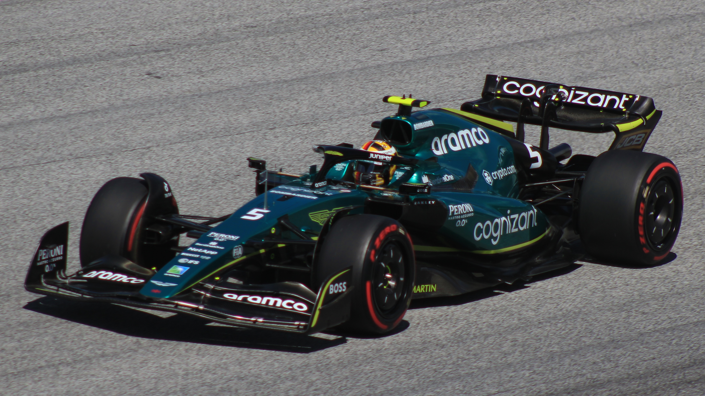

Aston Martin (2021-2022)
Final years
Vettel joined Aston Martin for the 2021 season, replacing Sergio Pérez. In his debut race weekend in Bahrain, he received a grid penalty in qualifying, forcing him to start last. While Vettel started well, he had a collision with Esteban Ocon, giving him a time penalty and ended up finishing in 15th place. He received five penalty points on his superlicence. Aston Martin team principal Otmar Szafnauer reported no concerns, owing to this being a very different car from the Ferrari, lack of laps in pre-season testing and a very impressive race start. In the fifth race of the season, Vettel scored his first points for the team with a fifth-place finish in Monaco. At the following race, the Azerbaijan Grand Prix, he claimed Aston Martin's first podium with a second-place finish. Vettel also finished second in Hungary, but was later disqualified, after his car failed to provide the one litre sample of fuel required. He ended the season in 12th place in the Drivers' standings, ahead of teammate Stroll. During the season, Vettel made 132 overtakes—the most of any driver—and won the inaugural Overtake Award.
Vettel missed the first two races of the 2022 season in Bahrain and Saudi Arabia after testing positive for COVID-19; he was substituted by Aston Martin's reserve driver Nico Hülkenberg. In July 2022, Vettel announced his retirement from Formula One at the end of the 2022 season.